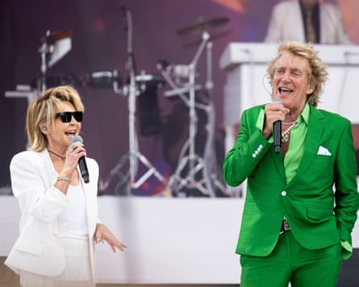
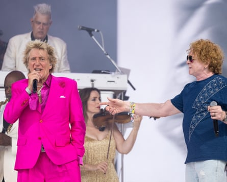

T he triumphant blare of bagpipes, playing Scotland the Brave, announce the start of Rod Stewart’s set in the legends slot on Pyramid stage on Sunday. Despite the blazing heat, the crowd is packed to the highest point of the hill to catch Stewart roll through his hits – and perhaps elaborate on his comments to The Times earlier this weekend, that Britain should give Nigel Farage a chance. (Given reasoning: Stewart’s met his brother, and quite likes him!)
Now 80 years old, Stewart is nonetheless instantly recognisable as Himself with his thatch of bottle-blond hair, deep tan and lounge-lizard styling. The fit today is a black brocade jacket with exaggerated lapels and gold threading, and flared jeans with naughty stars on his buttocks. The message is that Stewart’s still got it, and his diehard fans – readily identifiable and peppered within the vast crowd – are primed to lap it up.
Perhaps naively, not being an active member of the Hot Rod community myself, I’m struck by their enthusiasm: I see several people wearing wigs in loving homage (again, despite the heat) and I’m told that some especially passionate fans have been queuing at the front barricades since the Libertines’ set earlier this afternoon.
Stewart had earlier bemoaned the slot being known informally as the “tea-time slot”, saying it “sounds like pipe and slippers”. But his opening number, Tonight I’m Yours (Don’t Hurt Me), doesn’t grab the crowd in the same way as one of his hits – maybe he wants to ease into it.
Lulu performs with Rod Stewart on the Pyramid Stage at Glastonbury festival.Photograph: Harry Durrant/Getty Images
“Music brings us together, we need music, we’re having a party!” declares Stewart, before launching into Having a Party – again, hardly one of the hits. But he’s in good voice, especially given he cancelled gigs earlier this month. It helps that he’s never had a clear or stereotypically youthful voice to begin with; the years show, mostly, in his struggle to sustain long notes. But though a physical performer, writhing and launching around like one of the leggier Muppets, he entrusts responsibility for providing an on-stage spectacle to his bevvy of lovely ladies wearing short sequinned dresses, also supporting him with backing vocals, frequently fiddle and the occasional Riverdance action.
Of course this broad-base, Benny Hill sex appeal is also what Stewart is known for, and what the Hot Rods love him for perhaps as much as his hits. Some Guys Have All the Luck is the first singalong – and also an opportune point for Stewart to observe that Some Wars Have All the Media Attention. “There’s been a lot about the Middle East, and rightly so,” he says. “But I wanted to draw your attention to Ukraine.” He then dedicates to those stricken peoples his cover of the O’Jays’ Love Train, which lyrically seeks to spread peace the world over.
The First Cut Is the Deepest is the first to get the crowd swaying, but when Stewart tries to get a mood going with Tonight’s the Night (Gonna Be Alright) – always a bit seedy, with the invitation to “loosen up that pretty French gown” – it skews more queasy than sexy, despite the candles projected onscreen and steadily honking sax. Not today, Rod honey, it’s nearly 30 degrees out!
Not to be dissuaded, Stewart switches to nostalgia with Forever Young, with Technicolour visuals of Polaroids reminding the crowd of the good old days. The show benefits from the energetic lift; Stewart even gets a little jog going across the stage before bringing down the pace, once again, for You Wear It Well and more fiddle.
Mick Hucknall joins Stewart on the Pyramid stage at Glastonbury festival.Photograph: Harry Durrant/Getty Images
Maggie May naturally invites a singalong, but the crowd isn’t ready when Stewart invites them to start him off. The song rollicks along without either Rod or the crowd quite on top of the lyrics, but neither seem too fussed. Young Turks, with its Boys of Summer-style 80s panache, returns both parties to more stable footing; its propulsive energy and soaring chorus makes you wish that there were more like it in Stewart’s catalogue.
It’s a Heartache, featuring more roaming fiddle, is a mid-tempo crowdpleaser; Stewart’s cover of I’d Rather Go Blind is less so, but he’s given a pass when he dedicates it to the late Christine McVie of Fleetwood Mac. Da Ya Think I’m Sexy? was perhaps never not going to be confronting, no matter where it appeared in the set; once swaggering, even leering, in this context Stewart sounds genuinely inquiring, though perhaps not prepared for an honest answer. “1978, those were the days!” exhales Stewart before disappearing for a costume change, leaving “the girls” to entertain us with Lady Marmalade.
When Stewart returns, it’s with Michael Eavis, whom he embraces on stage and wishes happy birthday. I Don’t Want to Talk About It is another big singalong, and the best match so far for the crowd’s mood and energy. But then we descend, once again, into crooner territory with Stewart welcoming “Micky Boy” from Simply Red for If You Don’t Know Me By Now. Hucknall is just the first of Stewart’s long-trailed guests, the next being Ronnie Wood for Stay With Me. To see these old rockers united at the mic is a highlight of the set; Wood is still as slick as ever and the crowd, starting to flag in the high dry heat, responds to the energetic lift. Lulu joins Stewart for Hot Legs, which strikes the best note as the most straightforwardly silly of his “sexy” songs. Lulu isn’t afraid to draw attention to her own legs, which might very well be hot in white tassel trousers, but the staging keeps the focus on Stewart with photos of him in his prime, in short-shorts flaunting his pins (as the tabloids might have it). It’s an endearing twist, and supportive of Stewart’s icon status without pretending that he’s still a bare-chested sex symbol or rock god. The gentle strains of harp mark Sailing, and, naturally, the end of the set. Perhaps it’s the heat, but the singalong isn’t as lusty as you might expect – but nor has Stewart lost the crowd, which remains densely packed, just glad to be near him and then free.